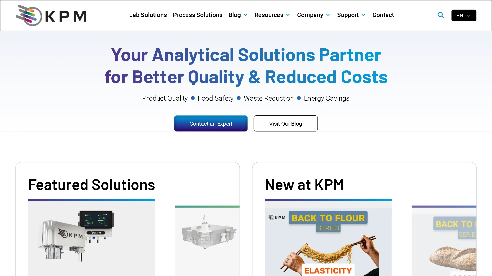
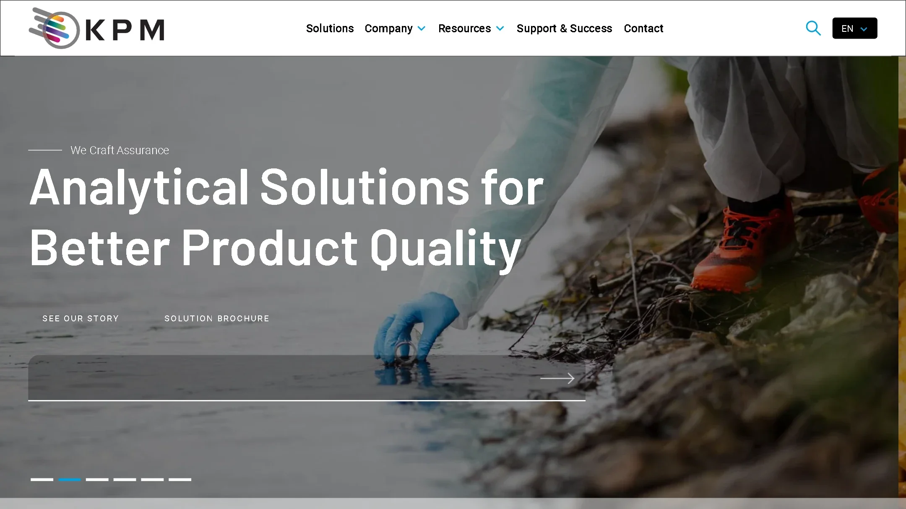
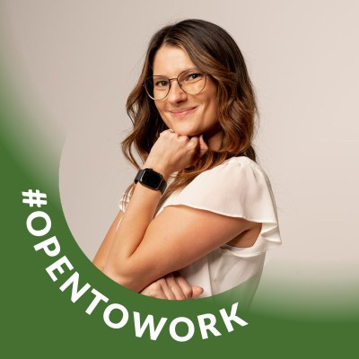

KPM Analytics Website
Owning the company website end to end in Webflow


Owning the company website end to end in Webflow
Working prototypes of the homepage in October 2024 and today, rebuilt from the real pages. Scroll, click the carousels and watch the animations. Each side scrolls on its own. Drag the handle to compare. Visit the live site ↗ View the October 2024 archive ↗
I own the company website in Webflow end to end, from research and design through build and ongoing updates, and partner with an outside dev team on SEO.
~43%
Better average Google search ranking
12.6%
More search impressions, year over year
~50%
Faster mobile page load (LCP)
12%
More engagement time on organic visits
Led the redesign of the homepage and blog. [Add the problem it solved and the result.]
Helped build the team's design process, introducing A/B testing, a design system, and user research using PostHog, Microsoft Clarity, and Google Analytics.
Raised the share of mobile visits with good page load by 22 percentage points, and passed Core Web Vitals on desktop.
Designed landing page and social media templates that let marketing test ideas faster, and created sales tools and assets.
Partnered with engineering on UI work, and created AI skills to keep company use of Claude and other AI tools on brand.
University department website design and research
Lack of value proposition and communication
Clear CTA and better related imagery
UVU's Student Leadership and Success Studies department helps students learn soft skills for their careers, with classes in stress management, speed reading, and leadership.
We found they lacked a website that communicated the value of their degrees and classes. Most students who took their classes enjoyed them, but the department had no way to communicate that value to new students. We found school counselors were the best CTA, and making sure students knew the class numbers was the next most effective way to get them to sign up.
During the discovery phase, we ran research to gather insights and understand user needs. Here are some of our survey results.
52%
Had never heard of the SLSS department
Only 7% had learned about it from the website.
80%+
Enjoyed the classes they took
Top 3
Leadership, stress management, job placement
What students said mattered most.
From user interviews, questionnaires, and eye tracking, we found the site didn't tell users who the department was or why they should care about its classes.
Students had often heard of some classes, or even taken them, but didn't know the bigger picture. They tended to take only individual classes that friends or counselors suggested.
Once we had research insights and a clearer understanding of the requirements, we began designing in Figma. I was in charge of the home page wireframe: a larger header with a clear value proposition, and cards that show off the value of the department's most popular classes.
We decided the best CTA was to direct students to the counselors who often suggested these classes. To show off what the department offered, we made cards for the most popular classes, each with a tagline about why you'd want to take it.
We presented to the department faculty and left them with all of our research, designs, and ideas in a handoff document. The site is being developed by students at UVU.
“Probably my favorite presentation. I really like how you used the data, the design of the site, the rationale, etc. Knocked it out of the park!”Faculty feedback
32%
Improvement to navigation
Students took less time to get around the page.
70%
Improvement to class selection
Finding why to take a class improved by over 70%.
121%
Improvement in counselor sign up
Students found how to book a counselor over twice as fast.
Enhancing developers' efficiency in creating consistent designs
Inconsistent design, little user research, and little to no UI design
A design system, user feedback, and Figma added to the workflow
Smart Vision Works is an AI food inspection tech company. I worked on UX, UI, graphic design, and more, alongside PhD experts in AI, machine learning, and manufacturing.
A content audit found over 34 different shades of blue, the company's primary color, in the code base. Developers had no quick way to find brand colors, so they spent extra time hunting or used colors that didn't fit.
I worked with other departments on official brand color documentation, and built a color system and SCSS file that sped up developers choosing colors by over 50%.
34
Shades of blue found in the code base
50%+
Faster color choices for developers
During a usability study I found a table design that was causing a lot of dead clicks: users averaged 4 per use. After the redesign, dead clicks dropped to zero.
I worked with developers and managers to create a complete design for a new version of one of the SVW products. Adding Figma to the process let stakeholders get much more involved, and kept designs consistent with the design system.
“Kaden is easy to work with, is organized, communicates well, and has all the characteristics one would hope in a UX designer.”
Improving a restaurant's digital menu experience prototype
Our first assumption was that most people at sit-down casual restaurants would rather use a physical menu than a digital one.
We surveyed to find who visits sit-down casual restaurants most (in our college town, 16 to 28 year olds) and asked about eating habits, age, and current use of digital menus.
Our assumption was right: most users preferred physical menus. What they liked best about digital menus was the images, and interviews showed images were a real advantage.
After a brainstorming session and some low-fidelity prototypes, one idea stood out: a menu we called “Tinder for food menus.” Users swipe left or right on dishes, which gives every item a large image and makes choosing a meal more interactive.
Testing showed users weren't engaging with much of the information and had trouble swiping the right way, so we built another iteration. We also raised the fidelity, using Olive Garden's branding and a selection of main entrees.
97%
Increase in user decision making
54%
Increase in user satisfaction
[One-line description]
[One-line description]
Add a short description of this project: what it was, your role, and how it turned out.
[One-line description]
[One-line description]
Add a short description of this project: what it was, your role, and how it turned out.
“Kaden is an excellent designer who really tries to understand the customer's perspective.”
[One-line description]
[One-line description]
Add a short description of this project: what it was, your role, and how it turned out.
[One-line description]
[One-line description]
Add a short description of this project: what it was, your role, and how it turned out.
[One-line description]
[One-line description]
Add a short description of this project: what it was, your role, and how it turned out.
[One-line description]
[One-line description]
Add a short description of this project: what it was, your role, and how it turned out.
“Kaden has a great work ethic and eye for what's missing or needed. He's reliable and the kind of employee I could put on any task.”

Sarah PrinceCustomer Support Integration Manager, Smart Vision Works[One-line description]
[One-line description]
Add a short description of this project: what it was, your role, and how it turned out.
3D preview needs WebGL
[One-line description]
3D preview needs WebGL
[One-line description]
Drag the model to spin it. On a keyboard, focus it and use the arrow keys.
Add a short description: what you made it with, how long it took, and anything you learned.
3D preview needs WebGL
[One-line description]
3D preview needs WebGL
[One-line description]
Drag the model to spin it. On a keyboard, focus it and use the arrow keys.
Add a short description: what you made it with, how long it took, and anything you learned.
Hire me, work with me, or just say hi.